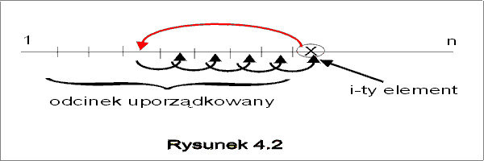

| « poprzedni punkt | nastêpny punkt » |
Idea tego algorytmu polega na sukcesywnym wstawianiu kolejnych elementów na w³a¶ciw± pozycjê w ju¿ uporz±dkowanym fragmencie ci±gu. Dok³adniej, sortowanie odbywaæ siê bêdzie w n-1 etapach. W i-tym etapie zapamiêtujemy i-ty element i porównujemy go z elementami poprzedzaj±cymi. W przypadku, gdy s± one wiêksze ni¿ i-ty, zostan± przesuniête o jedno miejsce w prawo zwalniaj±c w ten sposób zajmowan± pozycjê i robi±c ew. miejsce dla elementu i-tego. Zauwa¿my, ¿e w wyniku przesuniêæ nie "zgubili¶my, ¿adnego elementu, bo element i-ty zosta³ na pocz±tku zapamiêtany na zmiennej pomocniczej pom. W ten sposób zwolni³a siê pozycja i-ta i mogli¶my na niej umie¶ciæ element z pozycji s±siedniej, itd. Przesuniêcia w prawo kontynuujemy tak d³ugo, a¿ znajdziemy element, który jest mniejszy b±d¼ równy elementowi i-temu i wówczas wpisujemy element zapamiêtany na woln± pozycjê z jego prawej strony (por. Rysunek 4.2).

Algorytm realizuj±cy opisan± wy¿ej ideê nosi nazwê sortowania przez wstawianie (InsertionSort). Zauwa¿my, ¿e strategia postêpowania jest w tym algorytmie inna ni¿ w algorytmie SelectionSort. Tam nigdy nie wracali¶my do elementów, które wcze¶niej zosta³y wybrane. Natomiast wielokrotnie przegl±dali¶my elementy, które tworzy³y blok elementów jeszcze nieuporz±dkowanych. Tu odwrotnie. Z segmentu nieuporz±dkowanego bierzemy po jednym elemencie i wstawiamy go na w³a¶ciw± pozycjê w segmencie uporz±dkowanym "przepychaj±c", je¶li trzeba, elementy wiêksze, ju¿ uporz±dkowane, o jedn± pozycjê w prawo.
Algorytm mo¿emy zapisaæ w nastêpuj±cej postaci:
| InsertionSort (e : ci±g){ | |||
| i := 2; n := e.length; | |||
| while (i £ n) do | // e[1] £...£ e[i-1], i £ n+1 oraz i £ n | ||
| j := i; pom := e[i]; | // e[i] = pom | ||
| while (j>1 and e[j-1]>pom) do | // pom £ e[j+1] £ ... £ e[i] oraz e[j-1]>pom | ||
| e[j] := e[j-1]; | // pom £ e[j] £ e[j+1] £ ... £ e[i] | ||
| j := j - 1; | // pom £ e[j+1] £ ... £ e[i] | ||
| od; | // e[1] £...£ e[j-1] £ pom £ e[j+1] £ ... £ e[i] | ||
| e[j] := pom; | // e[1] £...£ e[i-1] £ e[i] | ||
| i := i+1; | // e[1] £...£ e[i-2] £ e[i-1], i £ n+1 | ||
| od | |||
| } | // e[1] £...£ e[i-2] £ e[i-1] oraz i=n+1 | ||
Analiza poprawno¶ci
Niech e1, ..., en bêdzie ci±giem, którego elementy stanowi± pocz±tkowe warto¶ci tablicy e oraz n>0, czyli spe³niony jest warunek pocz±tkowy specyfikacji algorytmów sortowania. Mamy wykazaæ, ¿e po wykonaniu algorytmu spe³niony bêdzie tak¿e warunek koñcowy
wk = {e[1] £ e[2] £ ... £ e[n] oraz istnieje taka permutacja i1, ..., in liczb 1,..., n, e[1] = ei1, e[n]= ein }.
Rozwa¿ymy najpierw pêtlê wewnêtrzn±. Za³ó¿my, ¿e wszystkie elementy od pozycji 1 a¿ do pozycji i-1 zosta³y ju¿ uporz±dkowane i wchodzimy do pêtli wewnêtrznej "while" wiedz±c, ¿e wszystkie elementy na pozycjach od j+1,..., i s± wiêksze od elementu pom. Przed pierwszym wej¶ciem do pêtli wewnêtrznej tak w³a¶nie jest, bo j=i. Je¶li warunek pêtli wewnêtrznej jest spe³niony, to prawdziwe s± w³asno¶ci:
pom £ e[j+1] £ ... £ e[i] oraz e[j-1]>pom oraz j>1.
Zatem przesuwaj±c na pozycjê j-t± element e[j-1], otrzymamy pom £ e[j] £ e[j+1] £ ... £ e[i]. Po wykonaniu przypisania "j:= j-1;", ponownie prawdziwa jest w³asno¶æ
pom £ e[j+1] £ ... £ e[i].
Ta ostatnia formu³a jest wiêc niezmiennikiem pêtli "while (i £ n) ". Na mocy twierdzenia o niezmiennikach (por. wyk³ad I, p.4), po wykonaniu pêtli wewnêtrznej spe³niony jest niezmiennik oraz, albo j=1, albo e[j-1]£ pom. Poniewa¿ ¿adna z pozycji e[1] do e[j-1] nie zosta³a w tej pêtli zmieniona, zatem, korzystaj±c z za³o¿enia i z niezmiennika mo¿emy w obu przypadkach stwierdziæ, ¿e prawdziwa jest formu³a
e[1] £...£ e[j-1] £ pom £ e[j+1] £ ... £ e[i].
Zauwa¿my jeszcze, ¿e aktualne warto¶ci e[1],...,e[j-1], pom, e[j+1],...,e[i] s± permutacj± oryginalnych warto¶ci danego ci±gu e1, ..., ei.
Zajmijmy siê teraz pêtl± zewnêtrzn±. Tu niezmiennikiem jest formu³a
e[1]£...£e[i-1] Ù i £ n+1. (*)
Je¶li w kolejnej iteracji pêtli zewnêtrznej spe³niony jest warunek pêtli (i £ n) oraz formu³a (*), to na mocy poprzednich rozwa¿añ, po wykonaniu pêtli wewnêtrznej mamy e[1] £...£ e[j-1] £ pom £ e[j+1] £ ... £ e[i]. Wstawiaj±c na miejsce j-te zapamiêtany wcze¶niej na zmiennej pom element e[i], otrzymujemy e[1] £...£ e[i-1] £ e[i]. Ponadto nadal (i £ n). Po zmianie warto¶ci i, mamy e[1] £...£ e[i-1] Ù i £ n+1.
Poniewa¿ formu³a (*) jest prawdziwa trywialnie przy pierwszym wej¶ciu i w ka¿dej iteracji pêtli zewnêtrznej, to jest równie¿ prawdziwa w chwili wyj¶cia. Zewnêtrzna pêtla zakoñczy siê, gdy i >n, co ³±cznie z formu³± (*) daje e[1]£...£e[n]. Poniewa¿ w i-tym kroku, warto¶ci pierwszych i elementów stanowi± permutacjê pierwszych i elementów danego ci±gu e1, ..., ei, zatem po zakoñczeniu pêtli zewnêtrznej elementy tablicy e s± permutacj± elementów danego ci±gu.
Twierdzenie 2.1 Algorytm InsertionSort jest ca³kowicie poprawnym rozwi±zaniem problemu sortowania, w ka¿dej strukturze danych z liniowym porz±dkiem £.
Analiza kosztu:
Zastanówmy siê najpierw nad przypadkami szczególnymi. Za³ó¿my ¿e dany ci±g, do którego chcemy zastosowaæ algorytm InsertionSort jest ju¿ uporz±dkowany niemalej±co. Wykonanie pêtli wewnêtrznej za ka¿dym razem zakoñczy siê na zbadaniu warunku (j>1 and e[j-1]>pom). ¯aden element nie bêdzie przesuniêty. W ka¿dej iteracji zewnêtrznej pêtli, wykonamy wiêc tylko jedno porównanie. Razem n-1 porównañ.
A jak siê zachowa nasz algorytm w przypadku ci±gu odwrotnie uporz±dkowanego? Ka¿dy element trzeba bêdzie przenie¶æ na pozycjê pierwsz±. Ale w tym celu pêtla wewnêtrzna bêdzie musia³a przesun±æ ca³y ju¿ uporz±dkowany fragment o jedno miejsce w prawo, wykonuj±c w i-tym kroku i-1 porównañ. Razem 1 + 2 + ...+ n-1 porównañ. Przypadek tu rozpatrywany jest najgorszy dla algorytmu InsertionSort, zatem koszt czasowy pesymistyczny wynosi W(n) = n(n-1)/2.
A jaki jest ¶redni koszt czasowy algorytmu? W pêtli zewnêtrznej nie wykonujemy porównañ. Policzymy wiêc jaka jest oczekiwana liczba porównañ wykonanych przez pêtlê wewnêtrzn±. W i-tym kroku mamy ju¿ uporz±dkowane elementy na pozycjach e[1],...,e[i-1], a zadanie pêtli wewnêtrznej polega na wstawieniu elementu e[i] na jedn± z pozycji 1,2,...,i. Za³ó¿my, ¿e z takim samym prawdopodobieñstwem element e[i] mo¿e zaj±æ ka¿de z tych i miejsc. Zatem prawdopodobieñstwo, ¿e e[i] zajmie miejsce j-te wynosi 1/i. Je¶li e[i] ma trafiæ na miejsce j-te, to musieli¶my element e[i] porównaæ z e[i-1],..., e[j], e[j-1] wykonuj±c przy tym i-j+1 porównañ. Wynika st±d, ¿e ¶redni liczba porównañ wykonanych przez pêtlê wewnêtrzn± wynosi
S j=1,...,i (1/i)(i-j+1) = (1/i)(1+2+...+i) = (i+1)/2.
Sumuj±c po wszystkich i otrzymujemy:
A(n) = S i=2,...,n (¶rednia liczba porównañ wykonanych w i-tym kroku algorytmu) = S i=2,...,n (i+1)/2 .
Ostatecznie A(n) = (1/4)n2 +O(n). Koszt ¶redni algorytmu InsertionSort niewiele odbiega od kosztu w przypadku pesymistycznym: te¿ jest kwadratowy.
Algorytm sortowania przez wstawianie sortuje w miejscu, tzn. wykorzystuje tylko pamiêæ konieczn± do przechowywania danych i kilka zmiennych pomocniczych. Jego koszt pamiêciowy jest wiêc liniowy w stosunku do rozmiaru danych, S(n) = Q(n)
Przyk³ad 2.1
Niech dany ci±g sk³ada siê z liczb ca³kowitych, 4,2,6,1,7,5. Stany tablicy e w kolejnych iteracjach pêtli zewnêtrznej algorytmu InsertionSort s± nastêpuj±ce:
4,2,6,1,7,5 2,4,6,1,7,5 2,4,6,1,7,5 1,2,4,6,7,5 1,2,4,6,7,5 1,2,4,5,6,7.
Pogrubion± czcionk± zaznaczono segmenty uporz±dkowane. J
Pytanie 2: Algorytm InsertionSort wykonuje do¶æ du¿o instrukcji przypisania. Policzmy tylko te, które dotycz± elementów ci±gu. Ile ich wykonamy w przypadku pesymistycznym, je¿eli ci±g sk³ada siê z n elementów?
| « poprzedni punkt | nastêpny punkt » |